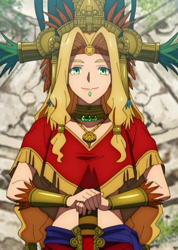
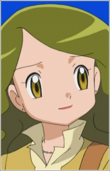
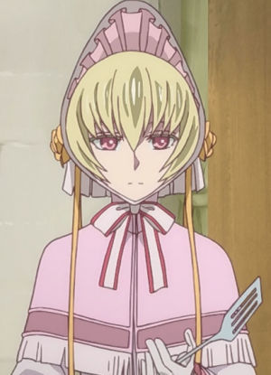

|
Alexa |
- Pokemon Black and White: Decolora Adventure
- Pokemon XY
- Pokemon XY and Z
- Pokemon XY amd Z Specials
|
Alexa is a journalist from the Kalos journey. She is the older sister of Viola. She is clumsy and forgetful. |
 |
Anna Heartfilia |
|
Anna Heartfilia is a Celestial Spirit Mage who is responsible for the Eclipse Gate project. She was the teacher for the five Dragon Slayers sended to the future in order to defeat Acnologia. She is a member of the Heartfilia Clan and one of the greatest Celestial Spirit Mage. She is a kindhearted person, being the caretaker of the Dragon Slayers. Anna is seen smiling cheerfully. |
 |
Cynthia |
|
Cynthia is champion of Sinnoh region. She is the strongest trainer in Sinnoh. She always willing to help. |
 |
Eclair |
- Fairy Tail: Houou no Miko Prologue
- Fairy Tail the Movie: Phoenix Priestess
|
Eclair is a mysterious girl who hates magic. She carries the Phoenix Stone. She is the protector of the stone. |
| |
Gilgamesh |
- Fate/kaleid liner Prisma Illya 2wei Herz!
- Fate/kaleid liner Prisma Illya 3rei!!
|
Gilgamesh is the Heroic spirit into the eighth Class Card. He is very easygoing attitude. |
 |
Maylene |
- Pokemon Diamond and Pearl
|
Maylene is the Gym Leader of Veilstone City and specializes in Fighting Types. She has a lack of confidences when she is battling. She is a powerful trainer. |
 |
Midori Kirigaya |
- Sword Art Online
- Sword Art Online: Alicization
- Sword Art Online: Alicization - War of Underworld: Part II
|
Midori Kirigaya is the mother of Sugha and aunt/adoptive mother of Kazuto Kirigaya. She is busy woman and leaves the two kids to take care of themselves. She does shows her love and care for Kazuto and Suguha. |
|  |
Quetzalcoatl |
- Fate/Grand Order: Absolute Demonic Front - Babylonia
|
Quetzalcoatl is a Rider-class Servant. She is one of the supreme existeneces in Central and South America as well as in Aztec Mythology. She is a god of peace and tranquility. A gentle god, with a famous legend, who guided to prosperity and with affection, the lovely humans. She is a bright and faithful optimist who has a smiling face. She is an elder sister with a very big-hearted spirit and a bright and passionate disposition that is like the sun. She endorses communication and prosperity with a smiling face. |
|  |
Sally |
|
Sally is a young women who used to help with the water taxi. Sally wants to be a doctor and visited a Gothitelle she use to work with. |
|  |
Silky |
- The Ancient Magus' Bride: Those Awaiting a Star
- The Ancient Magus' Bride
|
Silky is the landlady of the house where Elias and Chise live. She is silent and takes care of the housekeeping duties in the household. |
 |
Yuzuriha Nekoi |
- Tsubasa Chronicle: Tokyo Revelations
|
Yuzuriha Nekoi is a demon hunter in the land of Oto. She is one of the seven fighters of Tower faction in Tokyo. She is exceeding energetic. |